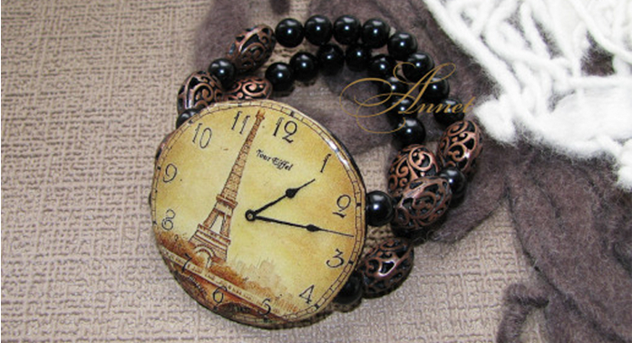

Наручные женские часы не только необходимость знания времени, но и элемент имиджа, предмет гордости, и украшение! Для женщин стало престижно иметь не одни часы, а несколько. Они ведь, несомненно, должны сочетаться с Ва-
шим нарядом. Сплошная элегантность и роскошь, браслет и корпус инкрустированы стразами, застежка простая.

Они ведь, несомненно, должны сочетаться с Вашим нарядом. Сплошная элегантность и роскошь, браслет и корпус инк
рустированы стразами, застежка проста, удобна в применении.
Заголовок
Наручные женские часы не только необходимость знания времени, но и элемент имиджа, предмет гордости, и украше
ние! Для женщин стало престижно иметь не одни часы, а несколько. Они ведь, несомненно, должны сочетаться с Ва-
шим нарядом. Сплошная элегантность и роскошь, браслет и корпус инкрустированы стразами, застежка простая.
Часы должны сочетаться с Вашим нарядом. Сплошная элегантность и роскошь, браслет и корпус инкрустированы стра
зами, застежка простая:
Модные женские часы в 2013 году;
Самый модный цвет 2013 года;
Самый модный цвет 2013 года;
Наручные женские часы не только необходимость знания времени, но и элемент имиджа, предмет гордости, и украше
ние! Для женщин стало престижно иметь не одни часы, а несколько.
Тестовый текст в первом табе. Наручные женские часы не только необходимость знания времени, но и элемент имид
жа, предмет гордости, и украшение! Для женщин стало престижно иметь не одни часы, а несколько. Они ведь, несом
ненно, должны сочетаться с Вашим нарядом. Сплошная элегантность и роскошь, браслет, корпус инкрустированы стра
зами, застежка простая.